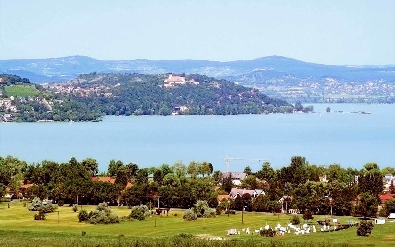

Zamárdi, az üdülőváros.
A városról röviden..
Zamárdi a Balaton déli partján, Somogy megyében, a Siófoki járásban, Siófok és Balatonföldvár között fekvő város. Neve 1932 és 1943 között Balatonzamárdi volt.Teljes lakossága, népessége csak 2424 fő(2015),viszont napjainkban Zamárdi a balatoni idegenforgalom egyik fellegvárának számít. A regisztrált vendégéjszakák száma meghaladja a 300 000-et. A város otthont ad sok rendezvénynek is, köztük van a Balaton Sound zenei fesztivál is.
|